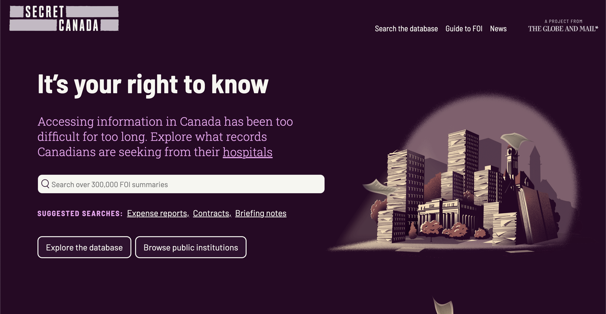
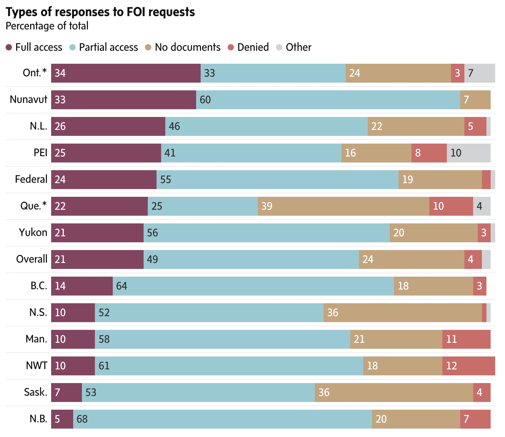

Uncovering Secret Canada
About me

Tom Cardoso, investigative reporter
at The Globe and Mail
- An apology
- Secret Canada
- The investigation
- The website
- Impact
- Trust in institutions
- The patient is dying
- Your role
- Where do we go from here?
Before we begin:
I’m sure I’ve previously spoken with many people in this room. If I’ve ever made your life difficult during an ATIP…
Sorry!!!
My intention with this talk is not to castigate, lay blame or complain. Unlike most folks at this conference, I’m an ATIP outsider.
Instead, I want to offer my perspective on the freedom of information system as it stands.
Secret Canada
Using FOI to investigate FOI.
Secret Canada was an exhaustive examination of Canada’s broken FOI systems, and the culmination of 18 months of investigative work. More than 1,000 FOIs, 200+ interviews and 100+ stories, blog posts and newsletters.
A project in two parts:
- An investigation
- A website
Investigation
Our reporting revealed that public institutions skirt FOI laws by overusing redactions, failing to meet legislated timelines and claiming “no records” exist when they do. And these institutions face few – if any – consequences for ignoring the precedents set by courts and information commissioners.

Some of our stories have looked at:
- Why FOI in Canada is broken, in a general sense
- How federal FOI has been hijacked by the immigration system
- Canada’s “island of transparency”: the province of Newfoundland
- How other countries’ FOI systems work
- The toothlessness of watchdog bodies responsible for overseeing these laws
- The near-impossibility of accessing historical records via ATIP
- The lack of consequences for those breaking FOI laws
- The state of municipal FOI regimes
Website (secretcanada.com)
- A database of more than 400,000 completed FOI summaries for 600+ federal, provincial, territorial and municipal public bodies
- Educational material, including detailed guides on filing FOIs, navigating the system and appealing decisions
- A blog
Our database was constructed from hundreds of FOIs, filed to every major public body in the country. Ministries, municipalities, police, hospitals, universities, Crown corporations… the list goes on. And we’re currently filing our next round!


Impact
But also…
- 400,000+ visits to our website with FOI guides and database
- 20,000+ FOI letters generated using our tools
That’s Secret Canada.
Next, I want to focus on the state of FOI.
Trust in institutions is plummeting
In theory, FOI can help. However…
The patient is dying.
Aging legislation

Response times aren’t what they should be

Everyone redacts at different rates
And the redactions are frequently unreasonable!

Commissioners are often disregarded
And governments are interpreting FOI law “creatively”

We spent a lot of our time speaking with FOI experts across Canada. Several general trends jumped out:
- Public bodies have embraced a risk mitigation approach to FOI.
- Access teams are under-resourced almost everywhere.
- Many public bodies don’t give much thought to their duty to assist.
- Redactions are supposed to be used sparingly and specifically. Instead, they’re painted with a wide brush.
- The appeals system has been captured by lawyers and legal thinking. I recently received more than 700 pages of representations for an appeal in B.C. That’s crazy!
I’m not pointing fingers here. Your work is hard! You’re doing your best! But the status quo isn’t good.
So: Where do we go from here?
- Legislation üëâ politicians
- Money üëâ politicians
- Training üëâ the public service
- Hearts and minds üëâ the public service, journalists and the public at large
- Legislation üëâ politicians
- Money üëâ politicians
- Training üëâ the public service
- Hearts and minds üëâ the public service, journalists and the public at large
To me, hearts and minds are especially important. We take the value of FOI for granted, but others in public bodies don’t necessarily see it the same way. We all need to demand more from our FOI system.
It could work. It can. It should!